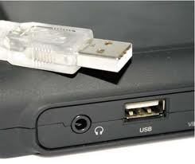

USB sebagai port komunikasi data di Komputer
 Jika kita berbicara mengenai port pada komputer, mungkin kita akan bertanya-tanya, bagian mana ya port itu? Port adalah bagian dari komputer yang berupa colokan terintegrasi dengan motherboard. Pada umumnya port memiliki fungsi tersendiri, salah satunya adalah menghubungkan dengan perangkat keras dan komunikasi atau pertukaran data. Untuk hal ini kita akan membahas mengenai USB. Port koneksi ini sudah jamak digunakan sejak tahun 1990-an dan masih digunakan hingga saat ini. Pengertian dan Fungsi Port USB
Universal Serial Bus atau USB adalah port yang didesain untuk memungkinkan berbagai macam periferal dengan socket yang terstandarisasi dapat dihubungkan dengan baik pada komputer sehingga tidak terjadi banyak macam port. Hal ini akan meningkatkan kemampuan plug and play yang memungkinkan satu perangkat dapat dihubungkan dan dilepaskan tanpa harus melakukan reboot komputer. USB juga menyediakan catu daya untuk perangkat keras yang mengkonsumsi daya rendah (+ 5 volt, 1 A) tanpa perlu menggunakan catu daya eksternal. Ditambah lagi kemampuan untuk memungkinkan perangkat keras digunakan tanpa harus menginstall driver khusus. fungsi port usb
Dengan adanya USB ini maka beberapa port dapat digabungkan seperti port menghubungkan mouse dan keyboard (PS/2), Joystick, Scanner, Printer dan lainnya. Semua dapat dihubungkan lewat satu port yang standar, yakni USB. Pada November tahun 1995, USB pertama kali diperkenalkan dengan nama USB 1.0 yang dipromosikan oleh Intel, Microsoft, Philips dan US Robotics. USB ini ditujukan untuk menggantikan banyaknya konektor yang ada di belakang komputer, sehingga memicu kebingungan dan kerepotan pengguna. Pada tahun 1998, muncul USB 1.1 yang mengatasi masalah pada versi sebelumnya. Pada April tahun 2000, muncul USB 2.0 yang distandarisasi oleh USB-Implementer Forum (USB-IF) pada akhir 2001. Pada November 2008, muncul USB 3.0 yang saat ini pemakaiannya belum merata pada semua perangkat.
Kecepatan tranfer usb
Dibawah ini adalah kecepatan transfer data yang mampu dihantarkan oleh USB, yaitu:
Kecepatan rendah (Low Speed) dijalankan pada 1,5 Mbit per detik atau 187 kB per detik sering digunakan pada keyboard, mouse dan joystick yang mendukung USB 1.1 dan USB 2.0.
Kecepatan penuh (Full Speed) dijalankan pada 12 Mbit per detik atau (1,5 MB per detik). Full speed adalah yang tercepat sebelum USB 2.0 muncul. Saat ini seluruh jenis USB mendukung kecepatan ini.
Kecepatan tinggi (Hi Speed) dijalankan pada 480 Mbit per detik (60 MB per detik) yang digunakan pada beberapa perangkat yang membutukan kecepatan transfer data seperti perangkat penyimpanan eksternal flashdrive, harddisk eksternal dan DVD eksternal yang mendukung USB 2.0.
Kecepatan ultra (Ultra Speed) dijalankan pada kecepatan 5 Gbit per detik (625 MB per detik) yang digunakan pada beberapa perangkat penyimpanan eksternal seperti flashdrive yang mendukung standar USB 3.0.